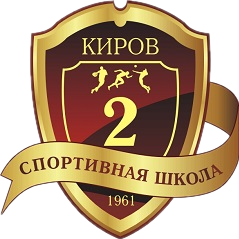

МБУ "Спортивная Школа №2"
| |||||||||
| Слабовидящим Обычный |
Основные сведения
Дата создания - 16 ноября 1961 года.
Учредитель - Муниципальное образование "Город Киров". Функции и полномочия осуществляет администрация города Кирова. При этом функции и полномочия Учредителя в части реализации прав собственника имущества осуществляет управление (комитет) по делам муниципальной собственности города Кирова, функции и полномочия Учредителя в части формирования и утверждения муниципального задания и финансового обеспечения его выполнения осуществляет управление по делам молодежи, физической культуре и спорту администрации города Кирова.
Адрес - г.Киров, ул. Октябрьский проспект 31.
График работы администрации - с 8-00 до 17-00. Работа тренеров согласно расписания занятий.
E-mail - dyssh2@mail.ru
Контактные телефоны:
Директор: (8332) 226-469
Вахта: (8332) 228-469
Спортивная часть: (8332) 227-470
Хозяйственная часть: (8332) 228-470
Информация о наборе
ЗАЯВЛЕНИЕ НА ЗАЧИСЛЕНИЕ В СШ №2 - Нажмите, чтобы скачать

Положение о конкурсе на создание эмблемы МБУ СШ №2

Спортивная школа №2 на карте